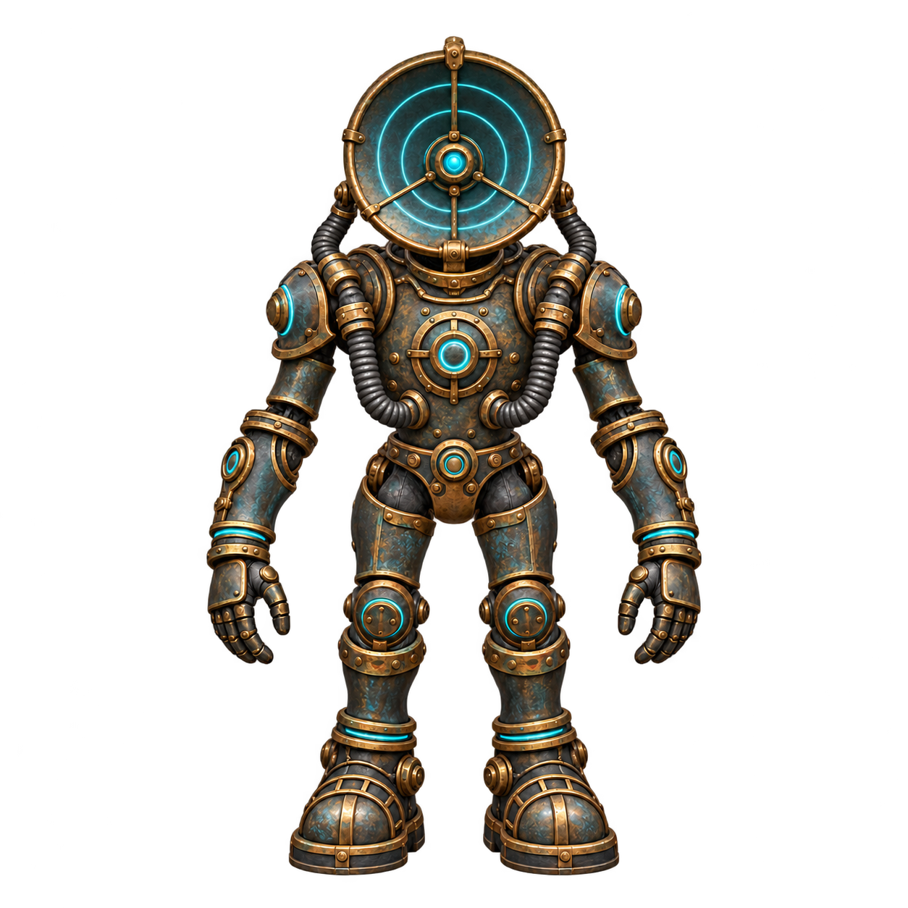
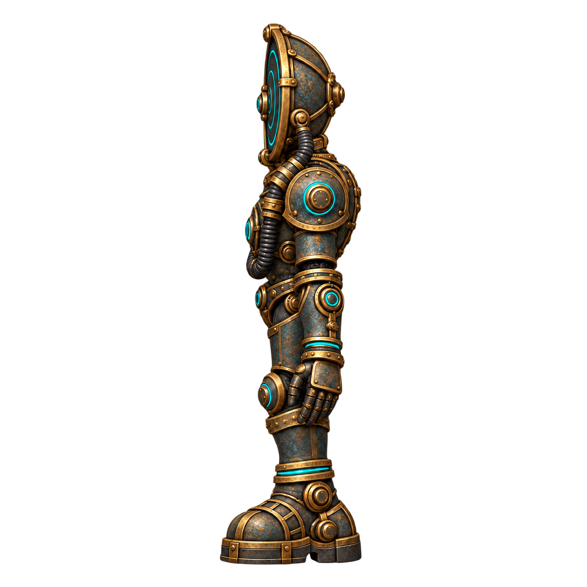
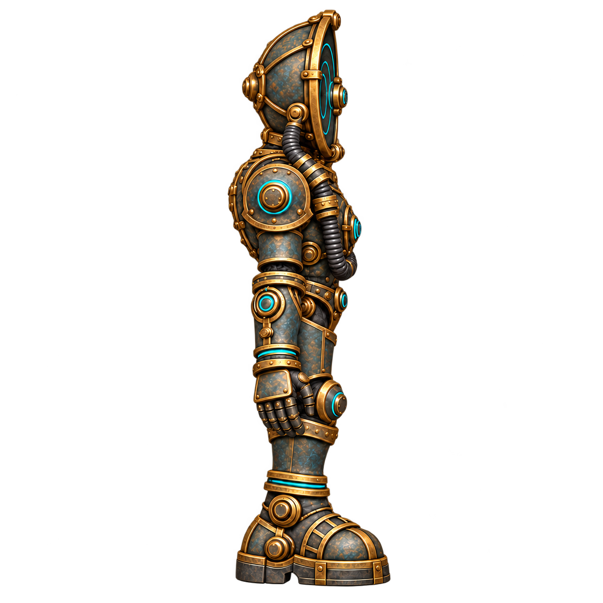

Relay Guardian #23: reference review
Draft, not runtime-bound. V2 restores top bracket clearance; hoses, dish depth and surface continuity still require cross-view review.
Front idle study | Front hit study
Aligned four-view comparison
Uniform scale per image to 420 px silhouette height; feet at y=470. This aligns framing only, not anatomy. Original files below are unchanged.
Originals and revisions
 Original: top bracket touches edge
Original: top bracket touches edge

V2: complete bracket, improved clearance Original left: broad cyan panel
Original left: broad cyan panel
Left v2: distinct rings, side projection still under review Original right: broad cyan panel
Original right: broad cyan panel
Right v2: separate rings; top margin still tightGame